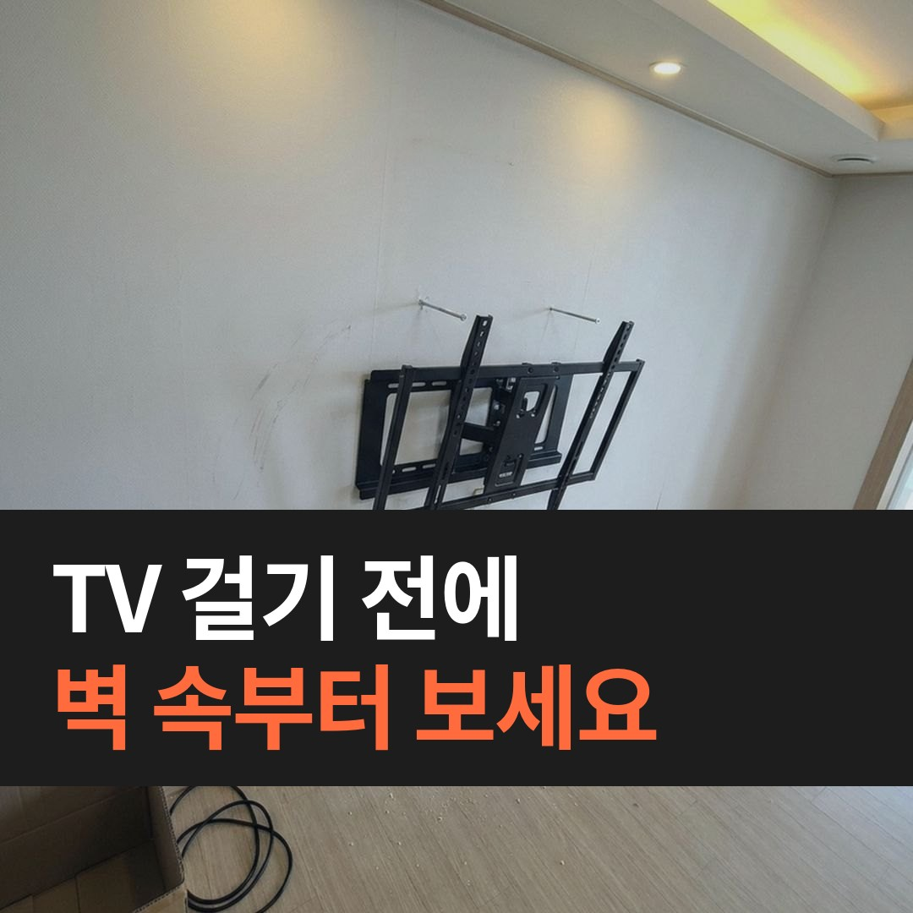
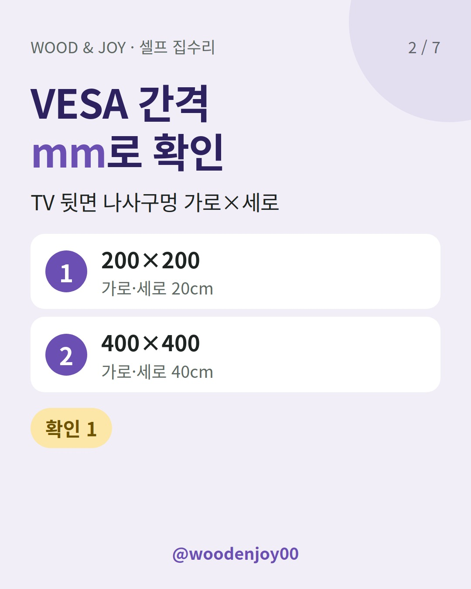
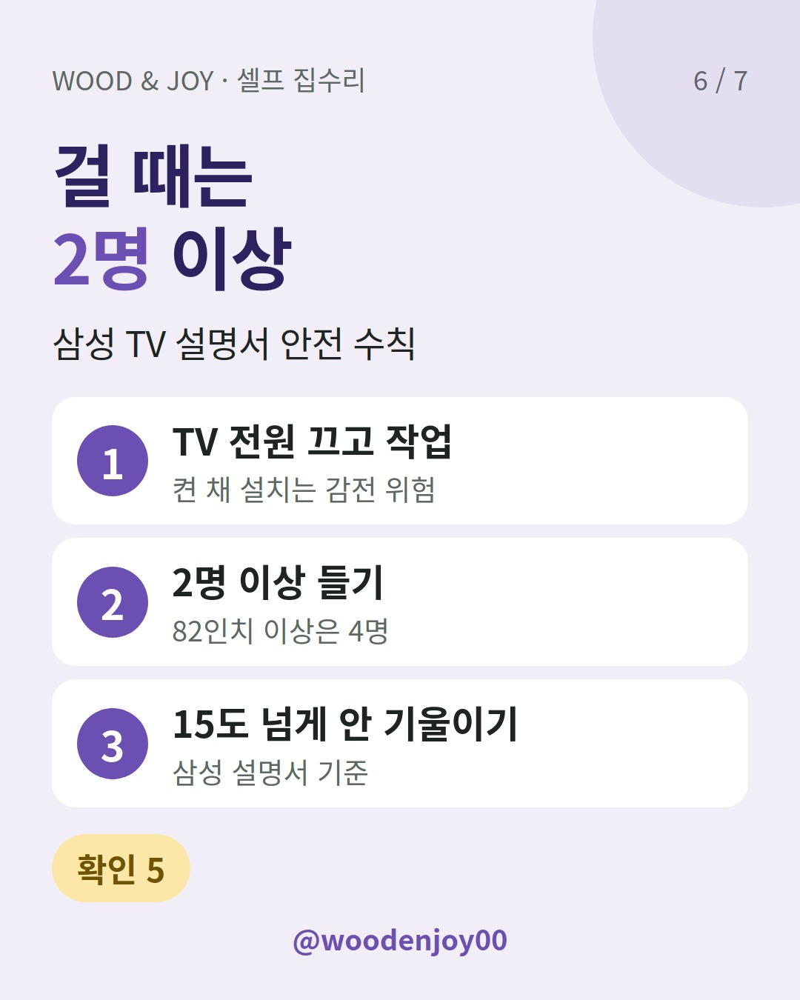

이 포스팅은 쿠팡 파트너스 활동의 일환으로, 이에 따른 일정액의 수수료를 제공받습니다.
벽을 두드렸더니 통통 소리가 나나요? 석고보드에 피스만 박으면 안 돼요. 뒤에 콘크리트가 있으면 거기까지 뚫고 칼블럭이나 스크류앙카로 잡아야 해요.

VESA는 TV 뒷면 나사 구멍 4개 사이의 가로×세로 간격을 mm로 적은 규격이에요. 400×300이면 가로 40cm, 세로 30cm예요.
거치대 상세페이지에서 지원 VESA 범위와 허용하중(kg)을 같이 보세요.

TV 쪽은 설명서 규격만 써요. 삼성 설명서 표에는 M8 나사 4개라고 적혀 있어요.
벽에 뚫는 자리는 TV VESA 간격이 아니라 거치대 벽판 구멍에 맞춰요. 잘못 뚫은 구멍은 벽구멍 메우기, 퍼티 한 번에 두껍게 바르면 갈라져요… 1mm씩 2번 순서대로 메우면 돼요.

콘크리트 벽에 함마드릴이 있으면 셀프로 해 볼 만해요. 석고만 있는 가벽이나 대형 TV, 벽 속을 모르겠다면 제조사 설치나 전문업체에 맡기세요. 삼성 설명서는 직접 설치하다 생긴 손상·부상을 책임지지 않는다고 적어 뒀어요.
| 종류 | 이런 집 | 주의할 점 |
|---|---|---|
| 고정형 | 벽에 바짝 붙여 정면에서 볼 때 | 각도 조절 안 됨 |
| 틸트형(각도형) | 높이 달거나 반사가 신경 쓰일 때 | 좌우 회전은 거의 안 됨 |
| 암형 | 소파·식탁 쪽으로 화면을 돌릴 때 | 비싸고 달기 어려움 |
👉 고정형 벽걸이 TV 거치대 — 정면에서만 보는 집
👉 틸트형(각도형) 벽걸이 TV 브라켓 — 높게 달아 아래로 숙이고 싶은 집
👉 암형 벽걸이 TV 거치대 — 화면을 돌려 봐야 하는 집
Q. 벽걸이티비 무타공으로 걸 수 있나요?
바닥에 세우는 '무타공 벽걸이 TV 스탠드'가 있어요. 이것도 VESA와 무게 범위부터 보세요.
Q. TV를 켠 채 달아도 되나요?
안 돼요. 삼성 설명서는 감전 위험이 있다고 해요.
거실 TV 벽, 두드리면 통통 울리나요? 댓글로 알려 주세요. 나사 구멍이 헐거워졌다면 방문경첩 나사 헛돌 때, 구멍 꽉 채우고 본드 굳히면 안 들어가요도 참고하세요.